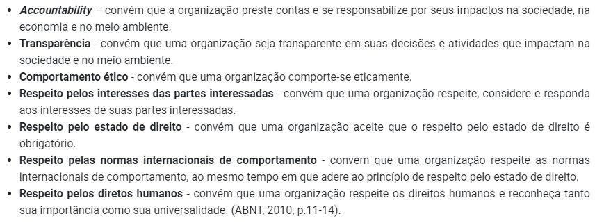
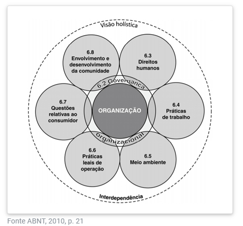
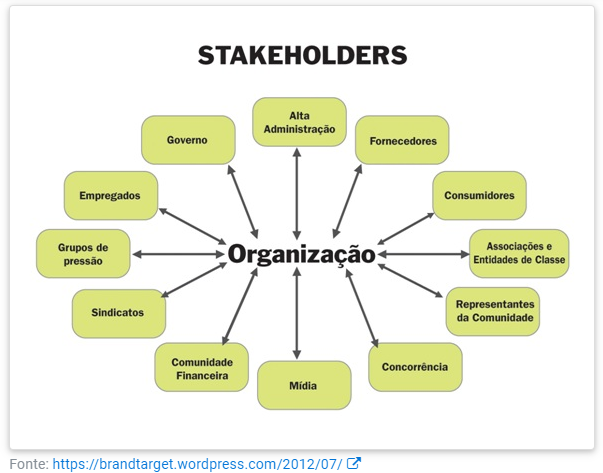
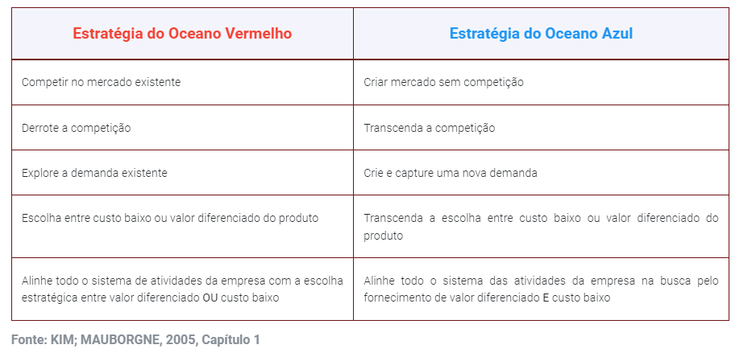
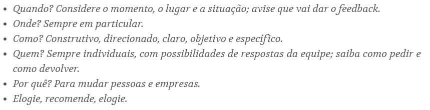

UNIDADE 2
SUSTENTABILIDADE
O conceito de desenvolvimento sustentável foi criado em 1987 no documento “Nosso Futuro Comum”, da Comissão Mundial sobre Meio Ambiente e Desenvolvimento (CMMAD) da Organização das Nações Unidas:
“[...] aquele que atende às necessidades do presente sem comprometer a possibilidade de as futuras gerações atenderem as suas próprias necessidades”
- Tripé:
- economico
- social
- ambiental
- uso racional de recursos
- equilibrio de ecossistemas
- melhoria da qualidade de vida
- impactos sociais do empreendimento - agir com ética
- preservação ambiental e cultural
- respeito à diversidade
- redução de desigualdades sociais
RESPONSABILIDADE SOCIAL
- iniciou na área de negocios
- se espalhou para outros empreendimentos
- não é filantropia/ação isolada
Responsabilidade social empresarial é a forma de gestão que se define pela relação ética e transparente da empresa com todos os públicos com os quais ela se relaciona e pelo estabelecimento de metas empresariais que impulsionem o desenvolvimento sustentável da sociedade, preservado recursos ambientais e culturais para as gerações futuras, respeitando a diversidade e promovendo a redução das desigualdades sociais. (NAJBERG, 2014, p. 120)
- 7 princípios:

- Temas Centrais:

- governança organizacional: toma e implementa decisões e trata de todos os outros temas
IMPACTO AMBIENTAL
considera-se impacto ambiental qualquer alteração das propriedades físicas, químicas e biológicas do meio ambiente, causada por qualquer forma de matéria ou de energia resultante das atividades humanas ....
- ações mitigadoras: medidas compensatórias
- conservação ambiental: uso racional de recursos
- Pegada ecológica: indicador de impacto ambiental
- impacto destrutivo do ser humano
- ser humano ultrapassa os limites de autocura do planeta
- traduz o espaço utilizado por pessoa/país para se sustentar, em hectares
- gestão ambiental: planejamento e execução de ações que visam a qualidade ambiental por meio da redução e a prevenção de impactos negativos
- controle de poluição: segue a lei
- redução de poluição: utiliza recursos de forma eficiente
- abordagem estratégica: conservação ambiental e se coloca à frente da concorrência
- SGA - Sistema de Gestão Ambiental
- norma NBR ISO 14001
ÉTICA
- Conceito de Kant:
- algo pode ser dito como ético se a pessoa se guia por uma máxima que não lhe incomodaria se esta se tornasse uma lei universal. Isto é, se todas as pessoas agissem como ela agiu, isso continuaria a ser bom para ela e para todos.
- qual o objetivo da empresa na sociedade?
- gerar lucro - foco na utilidade e rentabilidade
- melhoria de vida comunitária e respeito ao meio ambiente
- consumidores hoje em dia estão cada vez mais conscientes

- Código de conduta e ética profissional
- como se portar, o que é aceito ou não
- comportamento e postura nos diversos relacionamentos dentro da organização
HABILIDADES E COMPETENCIAS EMPREENDEDORAS
CRITIVIDADE E INOVAÇÃO
- 4 dimensões da criatividade:
- o produto
- o processo
- a pessoa
- o ambiente (pressão)
- Bloqueios de criatividade
- Ser aceito por um grupo
- preocupação excessiva com retorno econômico
- desejo de ser percebido como uma pessoa educada
- individualismo ou coletivismo exacerbados
- preocupação excessiva com a consistencia lógica
- espera de condições ideais
- a síndrome do rei da cocada preta
- receio de parecer preguiçoso
- Ativadores de criatividade: métodos que libertam das amarras e permitem explorar suas capacidades individuais
- Brainstorming
- criticas são proibidas
- disparates são bem-vindos
- quanto mais ideias, melhor
- procure combinações e melhorias
- Brainstorming
- Inovações
- não apenas na área tecnológica
- de produto, de processo, de marketing, organizacionais
- grau de impacto provocado
- incremental
- radical: mudança
- relação com a necessidade de mercado
- tipo A: radical, extrapola
- tipo B: radical, laboratório
- tipo C: incremental, limitada a um grupo específico
- grau de controle da empresa sobre o processo
- fechada: dentro dos limites da empresa
- aberta: conhecimento gerado externamente
- Oceano Azul
- estratégia de mercado
- para de tentar vencer a concorrência
- inovar com produtos e serviços inexistentes, ao invés da alta competitividade do oceano vermelho, cheio de sangue
- foca na proposta de valor e não nos custos
- instrumento de 4 ações
- elimine
- reduza
- aumente
- crie

Comunicação
- 3 áreas
- sintaxe - transmissão da informação
- semântica - significado de simbolos
- pragmática - como afeta o comportamento
- Axiomas da comunicação pragmática
- sempre haverá comunicação, mesmo no silência
- conteúdo (o que se fala) e relação (ordem, como se fala)
- sequencia de eventos
- forma digital e analogica de comunicação
- interação simétrica (igualdade nas ações/relações) ou complementar (diferença nas ações/relações)
- diálogo bem sucedido:
- é importante saber direcionar e também ouvir
- escuta ativa
- estar aberto a novas ideias
- feedback

- Rede de contatos
- construção de confiança